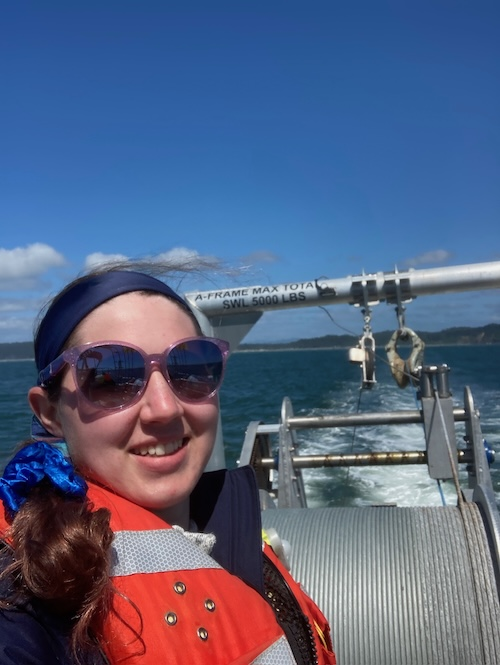
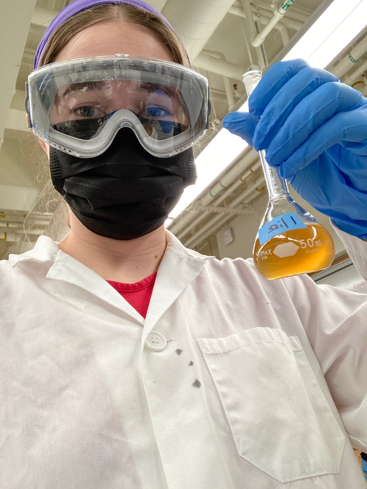
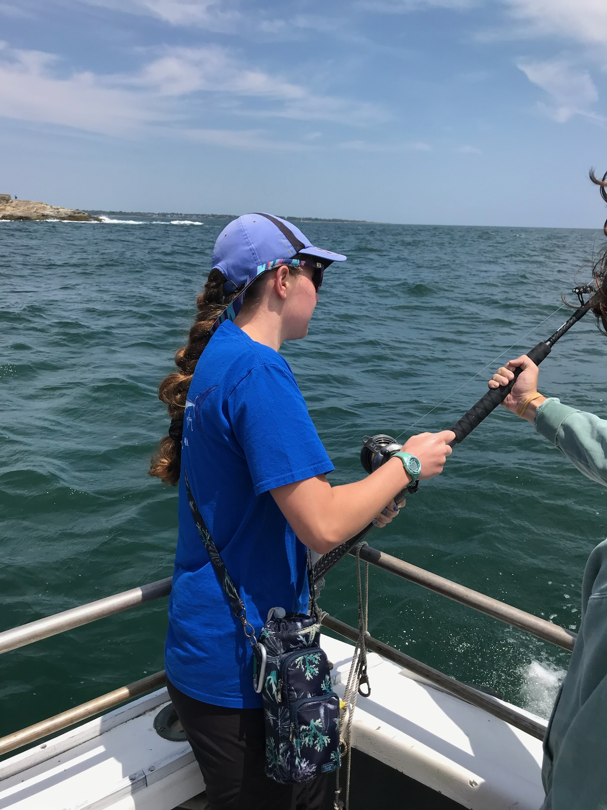
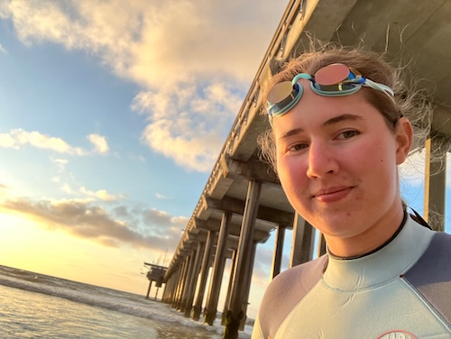
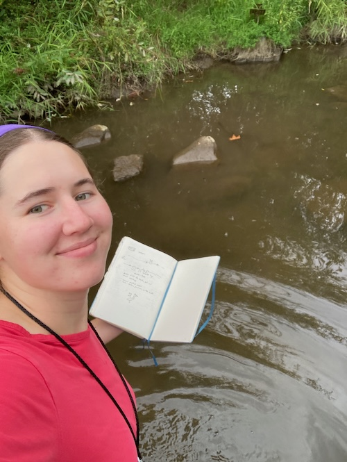
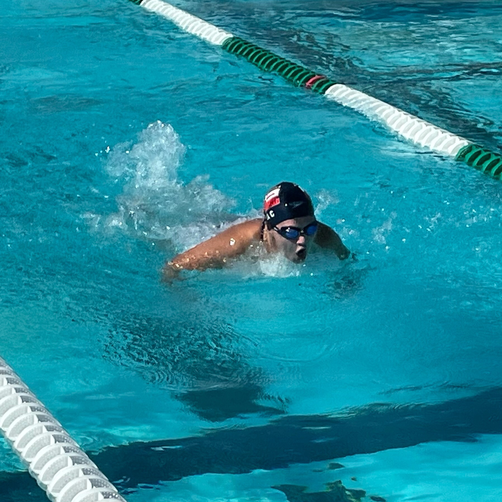
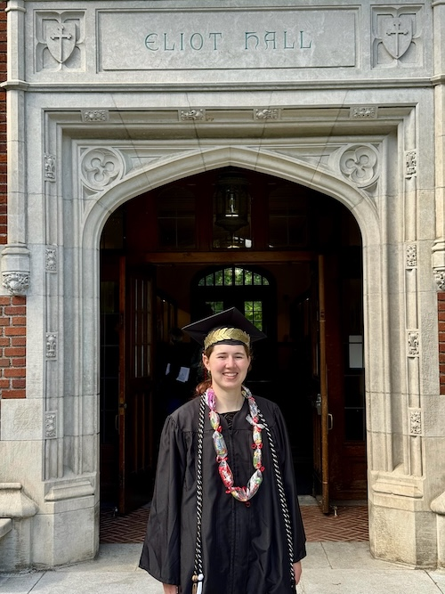
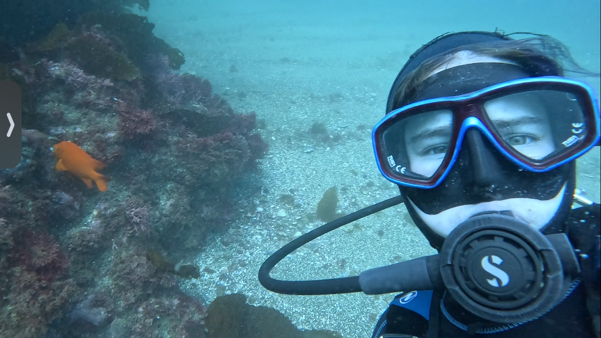

<!DOCTYPE html>
<html>
  <head>
    <title>Ella Crotty</title>
    <link href="style.css" rel="stylesheet">
    <link rel="preconnect" href="https://fonts.googleapis.com">
    <link rel="preconnect" href="https://fonts.gstatic.com" crossorigin>
    <link rel="preconnect" href="https://fonts.googleapis.com">
<link rel="preconnect" href="https://fonts.gstatic.com" crossorigin>
<link href="https://fonts.googleapis.com/css2?family=Crimson+Text:ital,wght@0,400;0,600;0,700;1,400;1,600;1,700&display=swap" rel="stylesheet">
    <meta name="viewport" content="width=device-width, initial-scale=1.0">
  </head>
</html>

<body> <!-- stuff in here is displayed -->

  <!--<a href="#id-of-element-to-link-to">Take me to a different part of the page</a>-->
  <header>
        <h1 style='text-align: center;'>Ella Crotty</h1>

    <nav>
      <container>
        <a class="btn" margin-left: 0px;' href="./index.html"><strong>Home</strong></a>
        <a class="btn" margin-left: 0px;' href="./CV.html"><strong>CV</strong></a>
        <a class="btn" margin-left: 0px;' href="./PublicationsPresentations.html"><strong>Publications & Presentations</strong></a>
        <a class="btn" margin-left: 0px;' href="./Research.html"><strong>Research</strong></a>
        <a class="btn" margin-left: 0px;' href="./TeachingOutreach.html"><strong>Teaching & Outreach</strong></a>
        <a class="btn" margin-left: 0px;' href="./Illustration.html"><strong>Illustration</strong></a>
      </container>
    </nav>
  </header>

  <main>
  <section id="Introduction">
  <h2 style='text-align: center;'>Ella Crotty, B.A. Environmental Studies/Biology</h2>

    <p>I grew up in San Diego, California, and got my B.A. at Reed College in Portland, Oregon. I am currently a volunteer with 
      <a href="https://calcofi.org">CalCOFI</a> and the <a href="https://semmenslab.org/">Semmens Lab</a> at Scripps Institution of Oceanography.
      Outside of work, I enjoy hiking, bodysurfing, swimming, and various forms of visual art.
    </p>
  
  <h3>Research interests:</h3>
  <ul id="Interests"> <!-- this is the child of body and can be styled -->
    <li>Marine Conservation Genetics: Applying genetic and bioinformatic approaches to research questions with practical
    applications to conservation strategies, such as defining populations or understanding stress responses.</li>
    <li>Climate Change: How does climate change affect marine ecosystems? How do species react on an evolutionary 
      and gene expression level?</li>
    <li>Human-Ocean Impacts: How do humans impact ocean ecosystems? How do ocean ecosystems affect us?</li>
    <li>Fisheries: How can we fish sustainably and preserve marine resources for future generations?</li>
    <li>Community Science: I am interested in doing research informed by the needs of local communities and 
      providing useful information to those communities</li>
    <li>Modeling: How can computational modeling help us understand fishieres and climate change?</li>
  </ul>
    </section>

    <section id="Links">
      <container style='background: #ffff;'>
        <a class="btn" style='text-align: center;' href="https://github.com/DolphinCoder">GitHub</a> 
        <a class="btn" style='text-align: center;' href="https://www.researchgate.net/profile/Ella-Crotty">ResearchGate</a> 
        <a class="btn" style='text-align: center;' href="https://orcid.org/0009-0004-4340-2007">ORCID</a> 
        <a class="btn" style='text-align: center;' href="https://www.linkedin.com/in/eleanor-c-81742b260/">LinkedIn</a> 
    </container>
    </section>

    <h3>Contact:</h3>
    <p>Email me at eleanor (dot) crotty (at) gmail [dot] com</p>

    
    
    
    
    
    
    
    
    
    
      <p>Image Credit: Fishing photo by Brad Wetherbee</p>

  </main>
</body>
